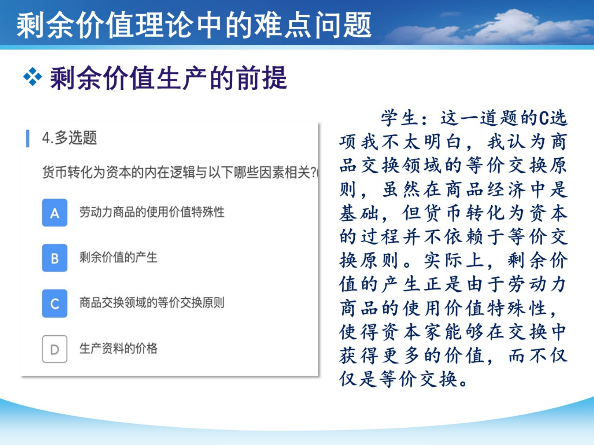
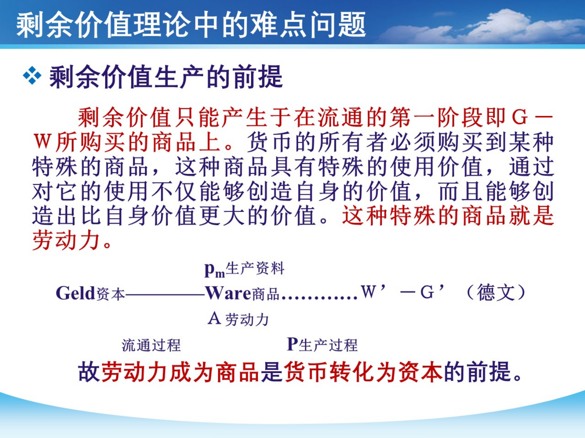
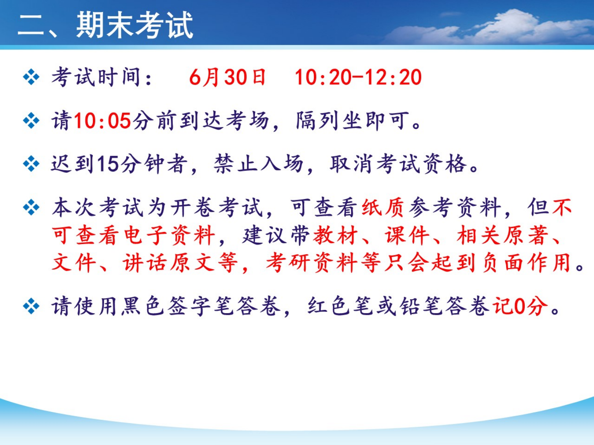
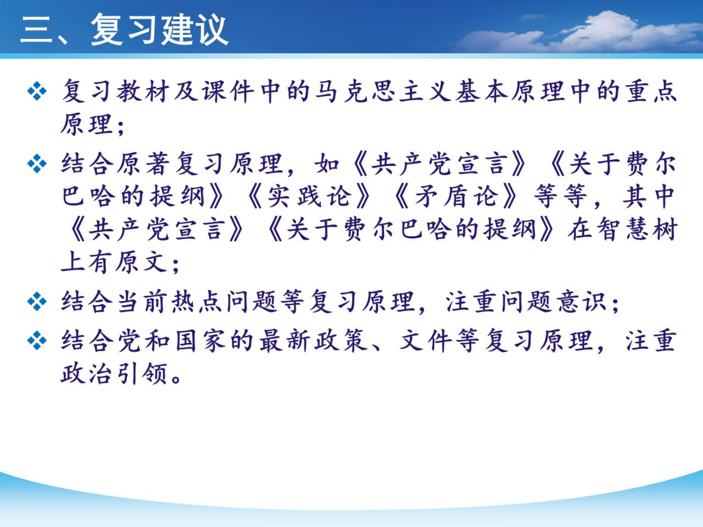

马原 6/30 纸质开卷最后冲刺
这页现在只服务剩下的马原：把纸质资料变成 能定位的索引，把材料题变成 能展开的四段答案。离散考前只用它做 20 分钟低成本预热，6/28 考完离散后再完整刷。
0. 自动进度：现在该翻资料、做定位，还是写第一段？
这里会读取你在本页留下的本机记录：纸质索引勾选、30 秒定位、原理分流题、材料题第一段。它不评价你努力没努力，只提醒下一步最能提分的动作。
0.5 先定策略：马原不是从头背书，是把题眼接到原理
第一步：找题眼
看到材料先问：它在讲 认识、矛盾、社会发展、资本、劳动、生态、就业 哪一类？不要一上来翻书。
第二步：写原理
每类原理准备 2-3 句“可直接上卷面”的句子。开卷的价值是帮你补细节，不是帮你临场想主线。
第三步：贴材料
材料题最容易丢分的是只背原理。必须把题干关键词拉回来：材料中的“创新、就业、生态、危机、实践”分别说明什么。
1. 老师最后一课重点雷达：这些最值得贴标签
根据你给的最后一节课录音和《马原期末复习.pdf》整理。录音有识别噪声，所以这里按“老师反复强调 + 课件原页能印证 + 开卷能定位”三条线合并，不把听不清的字硬编成结论。
| 板块 | 老师强调的重点 | 开卷页边怎么写 | 可能怎么考 |
|---|---|---|---|
| 导论 | 马克思主义的 人民性与实践性，不要只背抽象定义。 | 人民性 -> 为人民认识世界和改造世界；实践性 -> 在实践中形成、检验、发展。 | 简答或论述：为什么马克思主义不是书斋学问，而是人民改造世界的理论。 |
| 第一章 | 世界物质统一性、实践问题、联系和发展、三大规律，规律常结合现实例子考。 | 物质统一性；实践与人的本质；对立统一/质量互变/否定之否定。 | 用对立统一分析国企与私企、发展与安全、生态与增长等关系。 |
| 第二章 | 实践是认识的基础；认识从感性到理性再回到实践；真理绝对性与相对性；实践检验真理；真理原则与价值原则统一。 | 实践 -> 来源/动力/目的/标准；两次飞跃；真理与价值。 | 材料给调查研究、试点修改、政策评估、科技认识发展，要求用认识论分析。 |
| 第三章 | 社会存在与社会意识；意识形态作用；生产力/生产关系、经济基础/上层建筑；人民群众与杰出人物；社会形态；历史规律性与主体选择性。 | 社会存在决定社会意识；人民群众创造历史；规律性 + 主体选择。 | 用历史唯物主义分析政策、改革、群众实践、英雄人物与历史条件。 |
| 第四章 | 最后课件集中讲 剩余价值理论难点：货币为什么能转化为资本、劳动力商品的价值和使用价值、剩余价值从哪里来。 | 劳动力成为商品是前提；价值在流通中等价交换，剩余价值产生于生产中使用劳动力。 | 选择/论述：货币转化为资本的前提，剩余价值是否来自流通中的以小博大。 |
| 第五章 | 录音里明确说不用作为主线重点。 | 降级：只保留资本主义基本矛盾和新变化接口。 | 如果碰到，就接“新变化不消除基本矛盾”。 |
| 第六章 | 社会主义基本原则与中国特色社会主义；社会主义建设长期性、曲折中前进；科技竞争、信息化/新体制相关问题。 | 基本原则 + 中国特色；长期性曲折性；科技竞争与制度优势。 | 现实材料题：科技竞争、新质生产力、中国式现代化、制度优势。 |
| 共产主义 | 《共产党宣言》导读；共产主义不是只作为未来理想，还要理解为 过程、运动、实践。 | 共产主义 -> 理想目标 + 现实运动 + 实践过程。 | 论述：如何理解共产主义是过程和实践，而不只是远处结果。 |
2. 剩余价值专项：最后课件最密的一块
这份 PDF 前半部分基本都在补 剩余价值理论难点。这块最容易考选择、多选或论述里的概念辨析：不是背“资本家剥削工人”一句话，而是说清 为什么等价交换中还会产生剩余价值。
1. 前提：劳动力成为商品
劳动力是人的劳动能力，不等于劳动者本人。成为商品有两个条件：劳动者有人身自由；劳动者失去生产资料和生活来源，只能出卖劳动力。
2. 关键：价值 vs 使用价值
劳动力的价值由再生产劳动力所需的生活、繁衍、教育训练等费用决定；劳动力的使用价值就是劳动，能创造比自身价值更大的价值。
3. 结论：剩余价值来自生产过程
购买劳动力时仍是等价交换；资本家获得更多价值，不是在流通中以小博大，而是在生产中使用劳动力，发生价值增殖。
| 题干说法 | 你该怎么判 | 卷面短句 |
|---|---|---|
| 剩余价值产生于商品交换领域的等价交换原则。 | 不准确。等价交换是表面前提，不是剩余价值来源。 | 剩余价值产生于劳动力的使用过程，即资本主义生产过程。 |
| 货币转化为资本的内在逻辑与劳动力商品使用价值特殊性有关。 | 正确，这是老师课件多选题的核心。 | 劳动力的使用价值能创造大于自身价值的价值，货币因此能转化为资本。 |
| 资本家在购买劳动力时就直接买到了剩余价值。 | 错误。购买阶段是流通，仍按劳动力价值支付工资。 | 资本家不是在购买劳动力时获得增量，而是在使用劳动力时获得价值增殖。 |
| 资本积累就是把剩余价值转化为资本。 | 正确，PDF 中用简单再生产/扩大再生产说明。 | 把剩余价值的一部分追加为资本，用于扩大再生产，就是资本积累。 |

老师课件原页：货币转化为资本的多选题，关键不是“等价交换原则”，而是劳动力商品使用价值特殊性。

老师课件原页：G-W...P...W'-G'，剩余价值产生在对劳动力的使用过程，不是购买过程。
3. 往年题雷达：北航马原爱怎么考
我重新抽取了 2008-2018 往年卷，能看出一个很实用的趋势：早年有大量客观题，后面更偏论述和材料。你今年纸质开卷，最该训练的是“材料题原理分流”。
4. 纸质开卷索引：13 个页边钉子
你打印材料以后，不要只贴标签“第一章、第二章”。要在页边写成 题眼 -> 原理 -> 开头句。下面这 13 个是考前优先级最高的钉子，其中“剩余价值”来自最后一节课课件。
| 页边题眼 | 贴到哪类资料 | 第一句话 | 最容易错哪儿 |
|---|---|---|---|
| 实践与认识 | PPT 第二章；2012、2017 往年题 | 实践是认识的来源、动力、目的和检验真理的根本标准。 | 别只写“实践重要”，要写清认识从实践来、回到实践去。 |
| 两次飞跃 | PPT 第二章；2008-2010 客观题 | 认识过程包括从感性认识到理性认识、从理性认识到实践的两次飞跃。 | 第二次飞跃不是“获得理性认识”，而是回到实践、改造世界。 |
| 真理与价值 | PPT 第二章；2011 论述题 | 真理原则要求符合客观规律，价值原则要求符合主体需要，二者应在实践中统一。 | 别把“有用就是真理”；价值不能替代真理。 |
| 矛盾同一性斗争性 | PPT 第一章；2013、2017 往年题 | 矛盾双方既相互依存、相互贯通，又相互排斥、相互斗争，共同推动事物发展。 | 不要只写两面性，要说它如何推动发展、转化或解决问题。 |
| 矛盾普遍性特殊性 | PPT 第一章；2011、2012 往年题 | 矛盾普遍存在，但不同事物、不同阶段、不同方面的矛盾各有特殊性。 | 别只喊“具体问题具体分析”，要点出材料里的特殊条件。 |
| 人与自然 | PPT 第一章；2012、2013、2017 往年题 | 人通过实践改造自然，但必须尊重自然规律，实现人与自然和谐共生。 | 不能写成“自然决定一切”，人有能动性，但受规律约束。 |
| 生产力与生产关系 | PPT 第三六七章；新质生产力文章 | 生产力决定生产关系，生产关系对生产力具有反作用，适合则促进，不适合则阻碍。 | 新质生产力题必须写“形成与先进生产力相适应的新型生产关系”。 |
| 经济基础与上层建筑 | PPT 第三六七章；政治经济关系题 | 经济基础决定上层建筑，上层建筑反作用于经济基础。 | 不要把政策制度写成凭空出现，要说明它由经济发展要求推动。 |
| 人民群众与历史创造 | PPT 第三六七章；2017 历史创造题；就业文章 | 人民群众是历史的创造者，是社会物质财富、精神财富的创造者和社会变革的决定力量。 | 别把历史写成少数英雄单独创造；个人作用要放进社会条件中。 |
| 劳动价值论 | PPT 第四五章；2008、2013、2017 往年题 | 价值是凝结在商品中的一般人类劳动，活劳动是价值创造的唯一源泉。 | 机器、AI、技术能提高效率和财富，不等于独立创造价值。 |
| 剩余价值 | 最后一节课 PDF；第四章政治经济学 | 劳动力成为商品是货币转化为资本的前提；剩余价值产生于劳动力的使用过程。 | 不要写成剩余价值来自流通中的不等价交换；购买劳动力时仍是等价交换。 |
| 资本主义基本矛盾 | PPT 第四五章；金融危机、贸易战、资本主义新变化题 | 资本主义基本矛盾是生产社会化和资本主义私人占有之间的矛盾。 | 福利、科技、国家调节只能改变表现形式，不能根本消除矛盾。 |
| 新质生产力与就业 | 两篇必备文章；PPT 第三六七章 | 新质生产力以创新为主导，高质量充分就业体现以人民为中心的发展思想。 | 不要背文章流水账，要接马克思主义原理：生产力、人民群众、发展成果共享。 |
5. 材料题四段式：每段写什么
1. 定原理
开头别绕。第一句直接点出原理，比如“实践是认识的基础”“生产力决定生产关系”。
2. 抓材料
从题干抓 2-3 个关键词，不要大段抄。比如“科技创新、产业升级、绿色转型”。
3. 解释连接
这段是高分关键：说明为什么这些材料体现该原理。要写“因为、所以、体现、说明”。
4. 收方法论
最后落到实践要求：坚持客观规律、深化改革、以人民为中心、促进高质量发展。
5.5 材料题手把手拆解：从题干到第一段
这一节专门补“我知道原理名，但不知道怎么写”的断层。考试材料不会直接喊“我考实践认识论”，它会伪装成调查研究、科技创新、生态治理、资本增殖、理想信念等现实语言。你的任务是先把材料翻译回原理，再把原理翻译成卷面答案。
例 1：新质生产力/科技创新题
材料味道：科技创新、产业升级、数字经济、绿色转型、人才机制、体制机制改革。
例 2：剩余价值/资本增殖题
材料味道：工资、雇佣劳动、等价交换、劳动过程、G-W...P...W'-G'、价值增殖。
例 3：实践与认识/政策试点题
材料味道：调查研究、试点、反馈、修订方案、从经验到理论、再推广应用。
例 4：矛盾分析/关系协调题
材料味道：既要 A 又要 B、冲突与协调、发展与安全、国有企业与民营企业、效率与公平。
例 5：人与自然/生态文明题
材料味道：污染、资源约束、生态治理、绿色发展、尊重自然规律、人与自然和谐共生。
例 6：共产主义实践运动题
材料味道：远大理想、现实运动、人的自由全面发展、国家发展、个人奋斗、实践过程。
6. 题干信号分流表
| 题干出现这些词 | 先想到 | 答题展开 |
|---|---|---|
| 调查、实验、检验、从经验到理论、大学生社会实践 | 实践与认识 | 实践是基础；认识从感性到理性再回到实践；实践检验和发展认识。 |
| 既要又要、冲突与统一、转化、底线思维、危机中有机遇 | 矛盾分析法 | 写同一性、斗争性、主要矛盾和矛盾主要方面；最后落到具体问题具体分析。 |
| 绿水青山、污染、资源约束、生态治理 | 人与自然、客观规律 | 人有能动性，但实践必须尊重自然规律；绿色发展是处理人与自然关系的现实路径。 |
| 科技创新、产业升级、数字经济、全要素生产率 | 新质生产力、生产力决定生产关系 | 写创新主导、高科技高效能高质量；再接制度改革、人才和生产关系适应。 |
| 就业、青年、劳动者权益、民生、共同富裕 | 人民群众、以人民为中心 | 写人民群众创造历史，发展为了人民；就业是民生之本，发展要扩大就业质量和容量。 |
| 机器、自动化、AI、无人车间、价值源泉 | 劳动价值论 | 区分使用价值/财富增长和价值创造；活劳动仍是价值创造源泉。 |
| 金融危机、贸易战、贫富分化、资本主义新变化 | 资本主义基本矛盾 | 写生产社会化和私人占有矛盾，承认调节和新变化，但指出根源未消除。 |
| 英雄人物、群众、历史条件、个人意志相互作用 | 人民群众和历史规律 | 写人民群众是创造者，历史由合力形成，个人作用受社会条件和规律制约。 |
7. 30 秒开卷定位训练：题干来了先翻哪一块
这块专门模拟考场：材料很长，但你不能从第一页慢慢翻。每题先判断 页边钉子，再看“第一段怎么开”。做错不丢人，错题会告诉你该回第 4 节哪一个索引。
8. 原理分流互动小测
这 16 题不是让你背答案，而是训练考场第一反应。选择后点“核对”，解析会告诉你为什么选这个原理，以及怎么展开成材料题。
8.5 材料题第一段闸门：像考试一样先判题眼，再写开头
前面的选择题负责“认原理”，这里负责“写得出来”。每题只写第一段，不写整篇。合格标准不是字数多，而是四件事都出现：原理句、材料词、连接词、避开误区。
闸门 1｜调查研究与政策试点
展开评分点和参考第一段
闸门 2｜科技创新与体制机制改革
展开评分点和参考第一段
闸门 3｜工资、等价交换与价值增殖
展开评分点和参考第一段
闸门 4｜发展与安全、效率与公平
展开评分点和参考第一段
9. 材料题第一段训练
你不用现在写整篇，先练最关键的第一段：定原理 + 接材料。文本会自动保存在本机，考完离散后回来继续写。
练习 A：新质生产力
题干给“科技创新、产业升级、绿色转型、人才机制”，让你谈如何理解新质生产力。
展开参考第一段
生产力是社会发展的根本动力，生产力的发展要求生产关系作出相应调整。新质生产力以创新为主导，体现高科技、高效能、高质量的先进生产力质态。材料中的科技创新、产业升级、绿色转型和人才机制，说明推动高质量发展不能沿用粗放增长方式，而要通过技术突破、产业更新和制度改革形成新的发展动能。
练习 B：高质量充分就业
题干给“高校毕业生、职业教育、权益保障、就业优先”，让你用马原分析。
展开参考第一段
人民群众是历史的创造者，社会发展必须坚持以人民为中心。就业关系劳动者切身利益，也关系经济社会发展和国家长治久安。材料强调青年就业、技能培训、公共服务和权益保障，体现了发展为了人民、发展依靠人民、发展成果由人民共享的价值取向，也说明高质量发展必须增强对就业的带动能力。
练习 C：实践与认识
题干给“调查研究、形成方案、实践检验、再修改”，让你谈认识论。
展开参考第一段
实践是认识的来源、动力、目的和检验真理的根本标准。人的认识不是停留在头脑中的抽象想法，而是在实践中形成、发展并接受检验。材料中从调查研究到形成方案，再到实践检验和修改完善，正体现了认识由实践产生、在实践中深化并回到实践中发挥作用的过程。
练习 D：资本主义新变化
题干给“科技发达、福利改善、国家调节、危机反复”，问基本矛盾是否消除。
展开参考第一段
资本主义基本矛盾是生产社会化和资本主义私人占有之间的矛盾。当代资本主义在科技、管理、福利和国家调节方面出现新变化，但这些变化只是改变了矛盾的表现形式，并没有改变资本主义私有制和资本增殖逻辑。材料中的繁荣和调节应当被承认，但反复出现的危机和不平等说明基本矛盾并未根本消除。
练习 E：人与自然
题干给“污染、资源约束、绿色发展、生态优先”，让你谈人与自然关系。
展开参考第一段
自然界是人类社会存在和发展的前提，人通过实践改造自然，但这种实践必须尊重自然规律。材料中的污染和资源约束说明，如果只追求短期利益而违背自然规律，最终会反过来制约人的发展。坚持绿色发展、生态优先，是在实践中正确处理人与自然关系的现实要求。
练习 F：历史创造
题干给“个人意志、社会条件、群众实践、历史合力”，让你谈历史如何创造。
展开参考第一段
人民群众是历史的创造者，社会历史发展又受客观条件和规律制约。个人可以在历史中发挥作用，但这种作用不能脱离既定社会条件、群众实践和各种力量的相互作用。材料强调人们创造历史却不是随心所欲，说明历史结果是在无数个人活动相互交错中形成的社会合力。
练习 G：剩余价值
题干给“工资、等价交换、劳动过程、价值增殖”，问剩余价值从哪里来。
展开参考第一段
劳动力成为商品是货币转化为资本的前提。资本家在流通领域购买劳动力时支付的是劳动力的价值，交换仍可表现为等价交换；但劳动力的使用价值即劳动，能够在生产过程中创造出大于自身价值的价值。材料中的工资、劳动过程和价值增殖，说明剩余价值不是来自流通中的低买高卖，而是来自资本主义生产过程中对劳动力的使用。
练习 H：共产主义实践运动
题干问“为什么共产主义不是只作为未来理想，而是过程、运动和实践”。
展开参考第一段
共产主义既是马克思主义追求的远大社会理想，也是现实社会发展中不断推进的运动和实践过程。不能把它只理解为遥远未来的静止结果，而应把它放在人民群众改造世界、推动社会进步和实现人的自由全面发展的历史实践中理解。材料若从国家发展或个人选择切入，就要说明理想目标必须通过现实实践逐步展开。
10. 选择判断速记：最容易混的 12 组
| 容易混 | 正确区分 |
|---|---|
| 使用价值 vs 价值 | 使用价值满足需要，价值是凝结的一般人类劳动。有使用价值不一定有价值，有价值一定有使用价值。 |
| 具体劳动 vs 抽象劳动 | 具体劳动创造使用价值，抽象劳动形成价值。它们是同一劳动的两个方面。 |
| 个别劳动时间 vs 社会必要劳动时间 | 商品价值量由社会必要劳动时间决定，不由某个企业自己的耗时决定。 |
| 机器提高财富 vs 机器创造价值 | 机器和技术能提高生产率和使用价值量，但不能独立创造新价值。 |
| 劳动力 vs 劳动者 | 劳动力是人的劳动能力，不是劳动者本人。资本家购买的是劳动力商品，不是把劳动者当物买下。 |
| 劳动力价值 vs 劳动力使用价值 | 劳动力价值由再生产劳动力所需费用决定；使用价值是劳动，能创造大于自身价值的价值。 |
| 第一次飞跃 vs 第二次飞跃 | 第一次从感性到理性，第二次从理性到实践。 |
| 真理原则 vs 价值原则 | 真理看是否符合客观规律，价值看是否满足主体需要，二者要在实践中统一。 |
| 主要矛盾 vs 矛盾主要方面 | 主要矛盾是在多个矛盾中抓关键；矛盾主要方面是在同一矛盾双方中看哪边占支配。 |
| 生产力决定生产关系 vs 上层建筑反作用 | 生产力和经济基础有决定作用，但生产关系、上层建筑不是被动的，会促进或阻碍发展。 |
| 人民群众 vs 杰出人物 | 人民群众是决定力量，杰出人物能推动历史，但受社会条件和群众实践制约。 |
| 资本主义新变化 vs 基本矛盾消除 | 新变化可以缓和矛盾、调整表现形式，但不能根本消除资本主义基本矛盾。 |
11. 考试规则与答题禁区：别因为形式丢分
题型结构
老师课件给出样卷：共四道论述题，每题 25 分。第一、二、三题必答；第四题按校区/任课老师要求选择。
资料规则
纸质开卷，可以看教材、课件、相关原著、文件讲话原文；不能看电子资料。考研资料可能反而拖后腿。
作答规则
黑色签字笔作答，写清题号，无需抄题。答题纸空间有限，不要堆砌文字，不要卷字数。

老师课件原页：考试时间、纸质资料、黑色签字笔等硬规则。

老师课件原页：复习教材课件重点原理、结合原著和热点、注重问题意识与政治引领。
12. 考前 30 分钟纸质资料清单
离散考完后，你给马原的第一件事不是读完所有材料，而是把纸质资料变成检索工具。下面每打一个勾，你考场就少慌一点。